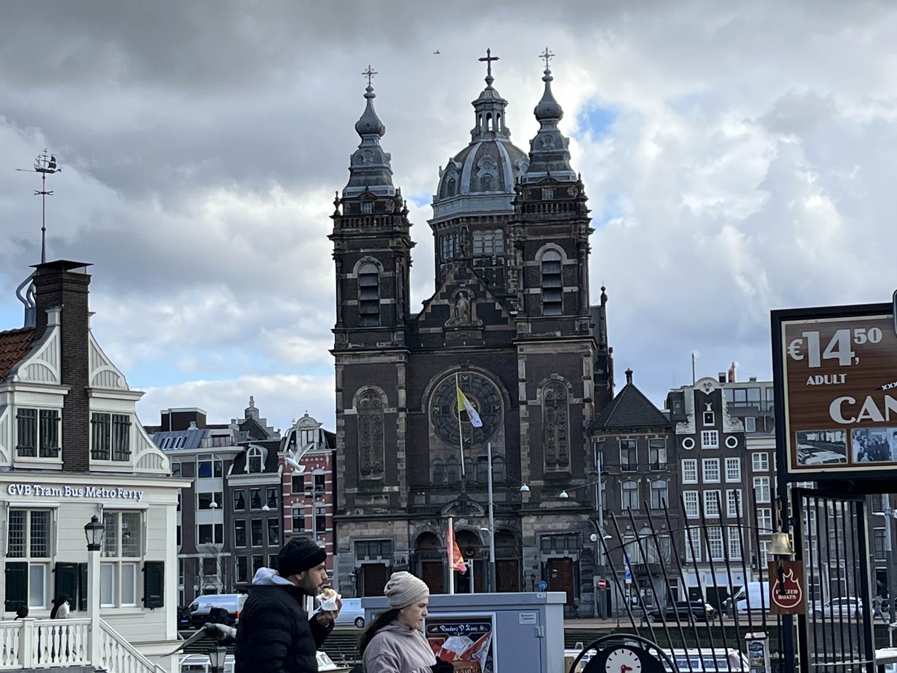

Vores tur til Holland startede helt tilbage en fredag i december. Vi havde tilmeldt os en relativt ukendt matematik konkurrence, og fik om morgenen tilsendt en opgave. I løbet af de næste 6 timer lavede vi beregninger i Excel, legede med matrixer som vi havde lært i intermat og sluttede af med at beregne den mest optimale måde at tilplante en juletræsplantage. Selvom matematikken var i fokus, var det en hyggelig dag, hvor vi blandt andet spiste alt for store mængder æbleskiver.
Efter at opgaven var blevet afleveret tilbage i december, havde vi næsten glemt alt om den før det næste skete. Men i starten af februar fik vi endelig svar, og det var langt bedre end forventet. Vi var blandt de to bedste danske hold, og skulle konkurrere i finalen i Holland. Så begyndte planlægningen, med alt fra at booke fly, til at rykke vores SRP frem så vi ikke skulle skrive den imens.
Den trettende februar kunne vi alle fire mødes i lufthavnen, hvor vi spændt steg på flyet. Vi brugte en halv dag i Amsterdam, hvor der vigtigst af alt blev købt læssevis af snacks, hvorefter vi tog ud til det afsidesliggende hotel. Vi blev indkvarteret i vores egen hytte, og efter en enkelt nats søvn startede konkurrencen fredag morgen.
Finalen bestod af 11 hold fra 5 forskellige lande. Først fulgte den obligatoriske navneskiltudlevering, kagebord og halv akavet ventetid. Men så blev opgaven introduceret, og vi kunne gå tilbage til vores hytte for at begynde. Med de syv matematikopgaver fulgte der også en række ekstra udfordringer, der skulle løses som gruppe. Når man har 26 timer til matematik, kan man ikke arbejde effektivt hele tiden. Men hvad gør man når nogle går kold midt på dagen, mens andre er ineffektive om morgenen? Når opgaverne ikke er lige nemme at tilgå, men man heller ikke bare kan gå i stå? Heldigvis var udfordringerne aldrig større end at de kunne blive løst, og vi kom langsomt gennem de forskellige opgaver. Undervejs var det ikke kun effektiv matematik, men også sociale aktiviteter, besøg af det andet danske hold, og virkelig lækker mad på hotellet.
Efter 24 timer havde vi ikke blot analyseret en masse data fra målinger i 1950’erne, vi havde udarbejdet vores eget tøjstørrelsessystem, og lavet en prototype til en skjorte der fulgte disse størrelser. Lørdag eftermiddag blev konkurrencen afsluttet, og vi kunne vende tilbage til Amsterdam. Her havde vi, hvad vi troede var, sidste nat i Holland, der blev efterfulgt af en enkelt dags turist tur i byen. Da vi trætte boardede flyet mod Danmark, opdagede vi snart at den største samarbejdsøvelse stod for døren. For når flyet aldrig letter, og man først kan flyve tiddeligt næste morgen, bliver alles tålmodighed testet mens man febrilsk forsøger at forstå hvad man skal gøre.
Konkurrencen var en helt ny måde at arbejde med matematik, et fag der normalt er meget individuelt. Pludselig skulle vi samarbejde om nogle omfattende opgaver, som ikke bare havde to streger under facit. Man skulle tænke logisk og ud af boksen, og kunne inddrage viden fra andre fag.
Studietur til Holland


Holland er et af de mest populære rejsemål for studierejser på både STX og HF. Landet byder på en unik kombination af kultur, historie og moderne samfundsforhold, hvilket gør det særligt velegnet til tværfaglige studieture. Under et ophold i Holland kan eleverne opleve alt fra de historiske kanaler i Amsterdam, de ikoniske vindmøller i Zaanse Schans, til de moderne kunstmuseer i Rotterdam. Disse besøg kan understøtte undervisningen. Holland har en rig historie, der spænder fra det gyldne århundrede i det 17. århundrede til nutidens udfordringer med klimaændringer og urbanisering.